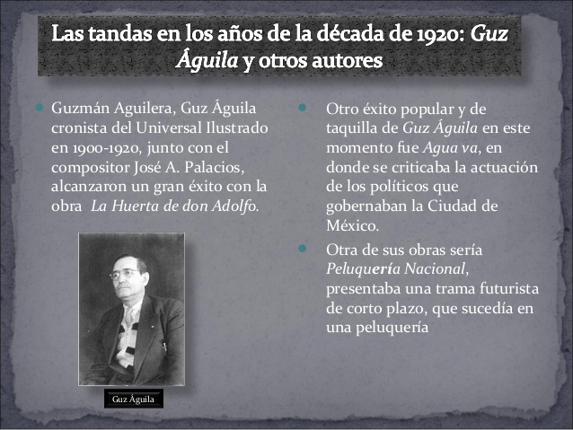

- 

Año: 1900s - 1910s
En la primera década del siglo XX, hace más de 100 años, el consumo musical no estaba al alcance de toda la población, la música se escuchaba en directo y casi no había medios para escuchar música en casa.
En esta época, 1900-1910, la música popular consistía en óperas y sinfonías en las grandes ciudades del mundo y el Ragtime (la primera aproximación al Jazz) aparecería en Estados Unidos.
Año: 1910s - 1920s
Durante la segunda década del siglo XX, la música se empieza a escuchar por todas partes, ya no sólo las clases más altas tienen acceso a ella. La radio será el invento que haga popular la música, no hace falta asistir a un concierto para disfrutar de ella.
La ópera seguirá siendo muy popular, y Enrico Caruso será el primer artista en retransmitir en directo una canción por ondas de radio.
El jazz sigue evolucionando y añadiendo instrumentos a sus formaciones, y sus ritmos y frescura hacen que los ritmos de Nueva Orleans y Chicago se escuchen en todo el mundo.
Aparece el primer instrumento electrónico de la Historia, el Theremin, con la colaboración de la Orquesta Sinfónica de Los Angeles.
Caruso cantó "Pagliacci" (Payaso) de LeonCavallo con música de la Orquesta Sinfónica de Viena.
El Jazz empezó a convertirse en el estilo musical más popular. Aquí podemos escuchar a "The Original Dixieland Jazz Band" tocando en el año 1918.
La "Sinfonía Doméstica" de Richard Strauss, en la que la orquesta nos cuenta la vida familiar del compositor, tranquilidad, discusiones, llantos del bebé...